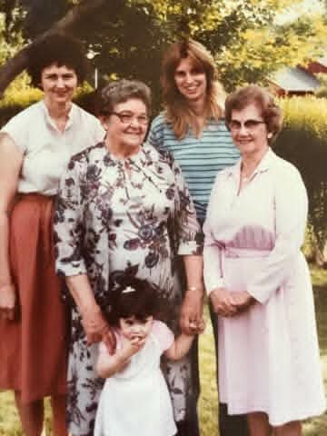

Susan Ruth Shamblen
25 November 1960, Cincinnati –
Quick Facts
Immediate Family
Parents
Lawrence Richard Shamblen (1932-1968) FAMILY ACCOUNTRuth Laverne McKinney (1932-2018) FAMILY ACCOUNT
Spouse
Garry Brewster (ex-husband) SUPPORTED (Geni)Shawn Kevin Moore (husband) SUPPORTED (Geni)
Children
Dawn Brewster FAMILY ACCOUNTRick Brewster FAMILY ACCOUNT
Mikey Moore FAMILY ACCOUNT
Melissa Moore FAMILY ACCOUNT
Chris Moore FAMILY ACCOUNT
Siblings
- Tricia Marie Shamblen (deceased 2016) FAMILY ACCOUNT
On Family Tree Sites
Couple Folder
Life Timeline
1960 · age 0
Born, 25 November 1960, Cincinnati {SUP} SUPPORTED
1968 · age 7
Father Lawrence died 3 October 1968, Mt. Pleasant, Pennsylvania (burial card); family account says Pennsylvania turnpike, Mt. Pleasant, Pennsylvania / Pennsylvania turnpike DOCUMENTED / FAMILY ACCOUNT
1976 · age 15
Mother Ruth married James Thomas McGregor 10 July 1976 at Kenwood Baptist Church, Cincinnati; family moved to Madeira that month, in the Indian Hill school district, Cincinnati / Madeira, Ohio FAMILY ACCOUNT
Life Story
Susan Ruth Shamblen, born 25 November 1960 in Cincinnati, is the elder daughter of Lawrence Richard Shamblen and Ruth Laverne McKinney {SUP}.
She grew up in Roselawn, Cincinnati, in the house on Blackstone Place, and later in Madeira {FAM}. In her own telling she was her father's girl, called 'Susie Q.' by him {FAM}.
She married Garry Brewster, and later Shawn Kevin Moore {SUP}. Her father died when she was 7, on 3 October 1968 {DOC}; she was in second grade and was called out of class to the office {FAM}.
Photo Gallery
Living family members are left out of public photos.



Sources and Evidence
- Lawrence Richard Shamblen × Ruth Laverne McKinney couple profile Doc — Children list and Memories & Life FAMILY ACCOUNT
- Geni profile, read via Rick's logged-in Geni tree 2026-11-02 — parents/spouse verified from parent children links SUPPORTED
- Geni, read-only 2026-11-02: Susan Ruth Moore (Shamblen), 6000000150637217862 — b. 25 Nov 1960 Cincinnati, daughter of Lawrence × Ruth, ex-husband Garry, husband Shawn Kevin Moore SUPPORTED
- Lawrence × Ruth Notes, 2026-10-18 death-certificate dig: Spring Grove burial card, Lawrence Richard Shamblen, d. 3 Oct 1968, Mt. Pleasant, PA, interred 5 Oct 1968 DOCUMENTED
- Ancestry harvest, Susan Ruth Shamblen, 2026-10-31: tree person 6189631237, birth 25 Nov 1960 Cincinnati, Living, father death 3 Oct 1968 Pennsylvania turnpike, mother death 7 Jul 2018 Cincinnati — 0 source citations on birth; tree 'No spouse / No known children' are gaps, not facts
Grades: DOCUMENTED an original record says it · SUPPORTED several records point to it · FAMILY ACCOUNT the family's own telling · UNPROVED a lead, not proved.
Research Notes and Open Questions
- Tree IDs were NOT found in public web search and are NOT in the parents' profile Doc — left blank, not invented.
- Geni verified 2026-11-02, read-only: Geni name Susan Ruth Moore (Shamblen); Garry shown as ex-husband, Shawn Kevin Moore as husband — draft spouses wording corrected accordingly.
- Father's death place: burial card Mt. Pleasant, PA {DOC} vs family/tree Pennsylvania turnpike {FAM}/{SUP} — both shown in the compiled note, unresolved.
- Children's names withheld in this draft per the privacy rule for this compilation, even though the Garry × Susan Notes name children with Shawn — parent agent to decide for the gated profile.
- WikiTree Shamblen-13 appears in the 2026-10-02 Garry × Susan PROFILES note only — not re-checked live, not added as a link here.
- Wedding photo from the Garry × Susan Pictures folder.
DNA
No DNA matches linked yet.